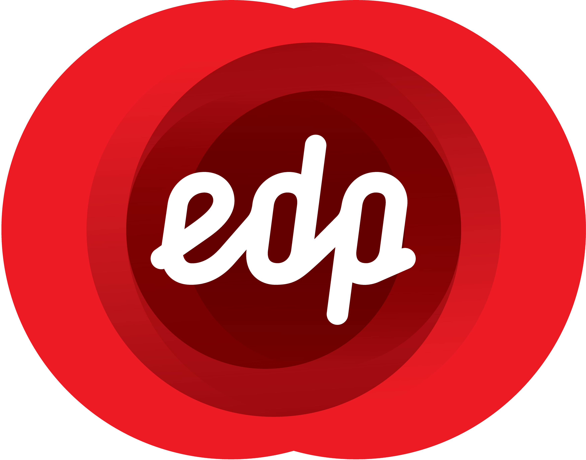

Rafael.Borges.Go();
Líder de projetos de automação envolvendo engenharia de IHM, programação de PLC, instrumentação, controle e sistemas SCADA
Automation.MachineLearning.ManufactureProblem()
Education.Background
Sou formado em tecnologia de automação industial pela faculdade do SENAI. Conto com 3 anos de experiência em suporte técnico, treinamentos e implantação dos produtos da GE Digital (iFix, Historian, Cimplicity, IGS, Workflow, etc).
BigData.DataScience
Atualmente curso uma especialização de Ciência de Dados e Big Data na PUC MINAS. A ideia é usar data analytics e machine learning para resolver problemas da manufatura.
About.Me
Procuro atuar na área de ciências de dados para resolver problemas da manufatura, tanto operacionais quando administrativos. Tenho background em gerenciamento de projeto de automação e desenvolvimento de relatórios e indicadores para diversas indústrias. Possuo conhecimentos de sistema opracional Windows Server, programação, desenvolvimento Web, back-end e análise de dados.
Sou um profissional na área de automação e realizo serviço de integração e implantação de sistemas de automação industriais.
Skills.List.Get
Integração de Sistmas
Trabalho em Equipe
Comunicação
Liderança de Projetos
Consultoria
Skills.Other.List.Get
Toolkit
- IGS/Kepware Driver
- Proficy iFix
- Proficy Cimplicity
- Proficy Historian
- Proficy Workflow
- ACP - ThinManager
- ProcessVue - Analyser
Projetos.Envolvidos
AMBEV - Coleta automática

Desenvolvimento de procedimentos de regras de negócio que definiam os eventos do processo de envase. Com isso, a AMBEV foi capaz de observer em seu sistema M.E.S a produção, dowtime planejado e downtime não planejado por lote.
UTGCA - Migração de IFix

Implantação de clientes servidores TS permitindo o acesso da opreação às IHM do processo de forma escalável
TERMOPERNAMBUCO - Gerenciamento de Alarmes
Consultoria para a implantação e desenvolvimento de um sistema de gerenciamento de alarmes. Contando com o desenvolvimento de um documento de filosofia de alarmes, e com ajuda do ProcessVue Anlyser, a empreza foi capaz de adaptar seus sistemas para que ficassem de acordo com a norma ISA 18.2.
EDP - CENTRO DE OPERAÇÕES
Configuração de um centro de operações online na núvem. O sistema contava com aquisição de dados de processo de várias unidades e o envio dos dados para um servidor historiador centralizado. Com isso a empresa pode auditar a disponibilidade dos sistemas aumentando o tempo de respota e facilitando a tomada de decisão.
Entre em Contato
- Email: rborges@datawiden.net
- Telefone: 11 94168-2256
- Linked in
- GitHub